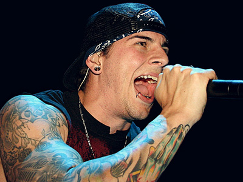
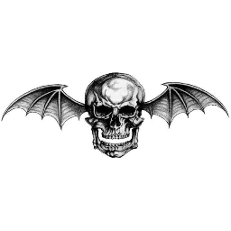
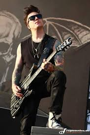
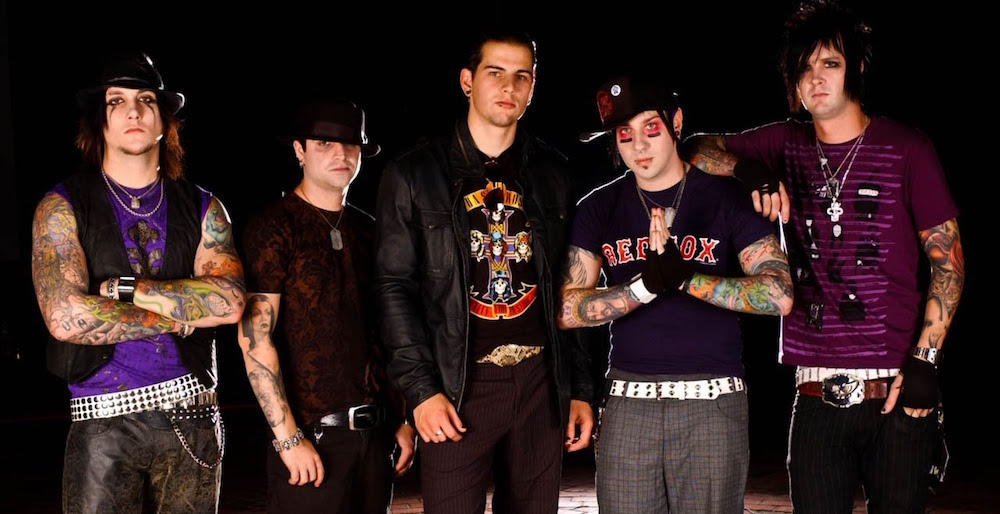
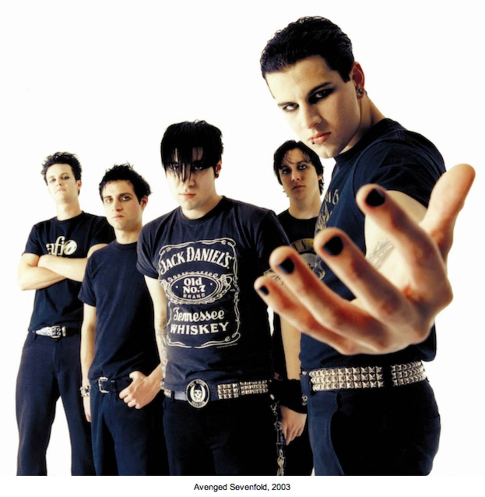
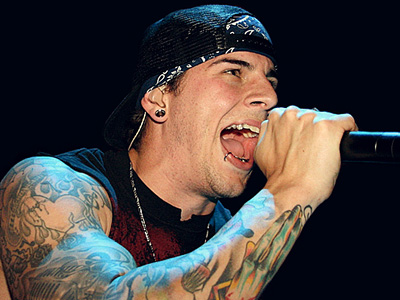
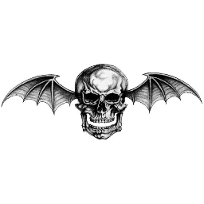
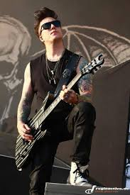
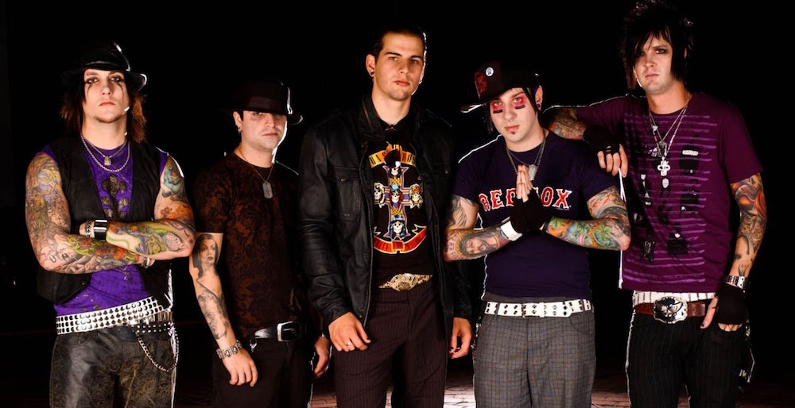
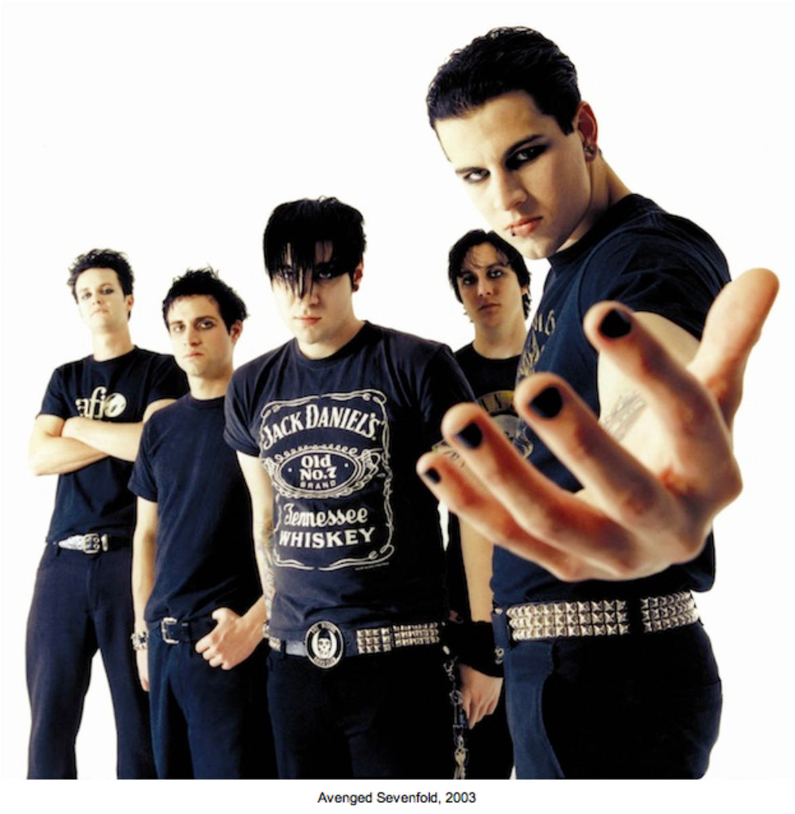

about the band
Avenged Sevenfold (sometimes abbreviated as A7X) is an American heavy metal band from Huntington Beach, California, formed in 1999. The band's current lineup consists of lead vocalist M. Shadows, rhythm guitarist and backing vocalist Zacky Vengeance, lead guitarist and backing vocalist Synyster Gates, bassist and backing vocalist Johnny Christ, and drummer Brooks Wackerman.
Avenged Sevenfold is known for its diverse rock sound and dramatic imagery in album covers and merchandise. Avenged Sevenfold emerged with a metalcore sound on the band's debut Sounding the Seventh Trumpet and continued this sound through their second album Waking the Fallen. However, Avenged Sevenfold's style had evolved by the band's third album and first major label release, City of Evil, into a heavy metal and hard rock style. The band continued to explore new sounds with its self-titled release and enjoyed continued mainstream success before their drummer, James "The Rev" Sullivan, died in 2009. Despite his death, Avenged Sevenfold continued on with the help of drummer Mike Portnoy (Dream Theater), and released and toured in support of its fifth album Nightmare in 2010, which debuted on the top spot of the Billboard 200, Avenged Sevenfold's first number one debut. In 2011 drummer Arin Ilejay joined the band on tours and recording. Avenged Sevenfold's sixth studio album Hail to the King, which was released in 2013, marked the only Avenged Sevenfold album featuring Arin Ilejay. Hail to the King charted as number 1 on the Billboard 200, the UK Albums chart, as well as the Finnish, Brazilian, Canadian, and Irish charts. In late 2014 Ilejay left the band, and was replaced by former Bad Religion drummer Brooks Wackerman, but wasn't revealed as his replacement until in 2015 the band announced Ilejay's departure. The band surprise-released their seventh studio album titled The Stage on October 28, 2016, which debuted as number 4 on the Billboard 200 chart in the US. The Stage is their first conceptual album and it marked another stylistic change for the band, moving towards the progressive metal sound.
To date, Avenged Sevenfold has released seven studio albums, one live album/DVD, two compilation albums and eighteen singles and have sold over 8 million albums worldwide.[3] Avenged Sevenfold was ranked No. 47 on Loudwire's list of Top 50 Metal Bands of All Time.
 








